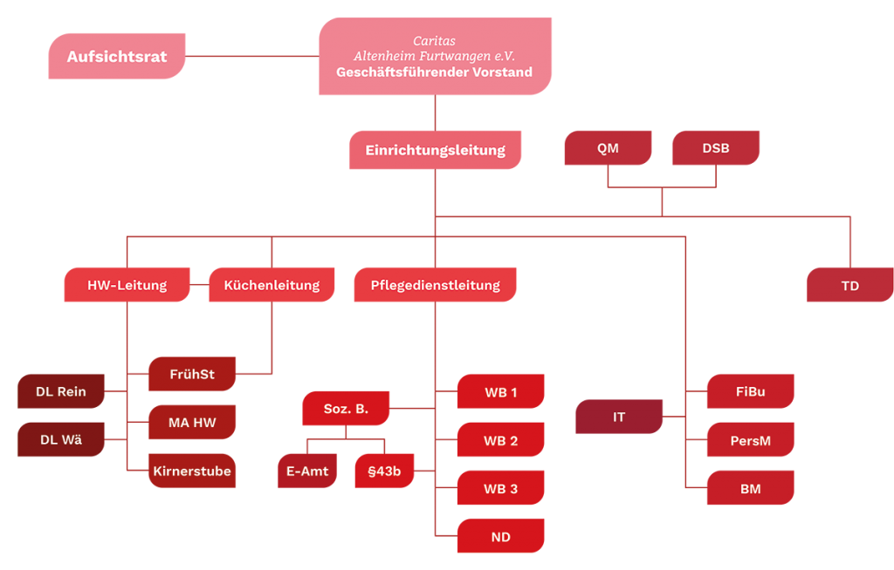

Über St. Cyriak
Wir pflegen nicht nur mit Herz, sondern begegnen Ihnen mit herzenswarmer von Empathie geprägter Menschlichkeit – Wohnen und Pflege im Einklang mit Wohn- und Lebensqualität gewünscht?
Das St. Cyriak Wohnen und Pflege dessen Trägerverein der „Caritas-Altenheim-Furtwangen e.V.“ ist, ist eine Pflegeeinrichtung mit Tradition. Im Jahre 1977 in Betrieb gegangen, wurde es im Laufe der Jahre 2007-2009 sukzessive saniert und angebaut.
Unsere Werte
St. Cyriak Wohnen und Pflege versteht sich in seinem Kernbereich, der Pflege und Betreuung alter, pflegebedürftiger Menschen, sowohl als Dienstleister und Versorger. Dabei ist es in der pflegerischen Versorgung und Betreuung unser Ziel:
Ganzheitlichkeit
Die hier wohnenden Menschen (Bewohnerinnen und Bewohner) in ihrer Ganzheit mit allen Wünschen und Bedürfnissen wahrzunehmen und diese zu achten.
Die hier wohnenden Menschen (Bewohnerinnen und Bewohner) in ihrer Ganzheit mit allen Wünschen und Bedürfnissen wahrzunehmen und diese zu achten.
Professionelle Hilfe
Wir wollen den Menschen, die wegen ihres Hilfebedarfs im St. Cyriak wohnen, in ihren Ressourcen stärken und ihnen in ihren Defiziten mit professioneller Hilfe beistehen.
Wir wollen den Menschen, die wegen ihres Hilfebedarfs im St. Cyriak wohnen, in ihren Ressourcen stärken und ihnen in ihren Defiziten mit professioneller Hilfe beistehen.
Integration
Es ist uns wichtig, bei den hier wohnenden Menschen die erlernten und gelebten Eigenheiten wie Religion, Herkunft, persönliche Orientierung zu beachten und diese in die Wohngemeinschaft zu integrieren.
Es ist uns wichtig, bei den hier wohnenden Menschen die erlernten und gelebten Eigenheiten wie Religion, Herkunft, persönliche Orientierung zu beachten und diese in die Wohngemeinschaft zu integrieren.
Individualität
Wir wollen für die hier wohnenden Menschen ein professionelles Angebot an Pflege und Betreuung bereithalten. Diese Angebote sind auf die Persönlichkeit der Bewohnerinnen und Bewohner zugeschnitten, werden mit ihnen abgestimmt und bei Veränderungen zeitnah angepasst.
Wir wollen für die hier wohnenden Menschen ein professionelles Angebot an Pflege und Betreuung bereithalten. Diese Angebote sind auf die Persönlichkeit der Bewohnerinnen und Bewohner zugeschnitten, werden mit ihnen abgestimmt und bei Veränderungen zeitnah angepasst.
Struktur & Nachhaltigkeit
Unsere Angebote wachsen auf den Strukturen unserer Einrichtung, sind nachhaltig und werden in unterschiedliche Prozesse geordnet. Die Angebote gelten für alle hier wohnenden Menschen.
Unsere Angebote wachsen auf den Strukturen unserer Einrichtung, sind nachhaltig und werden in unterschiedliche Prozesse geordnet. Die Angebote gelten für alle hier wohnenden Menschen.
Wertschätzung
Wir wollen für die hier wohnenden Menschen erreichen, dass sie sich wohlfühlen, sich angenommen erleben und die Mitarbeiterschaft, als eine Dienstgemeinschaft im Sinne der christlichen Nächstenliebe wahrnehmen.
Wir wollen für die hier wohnenden Menschen erreichen, dass sie sich wohlfühlen, sich angenommen erleben und die Mitarbeiterschaft, als eine Dienstgemeinschaft im Sinne der christlichen Nächstenliebe wahrnehmen.
Organigramm
St. Cyriak Wohnen & Pflege

Hier finden Sie unser Institutionelles Schutzkonzept